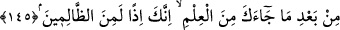

râzı idi. Bununla birlikte Allah’ın arzusuna uygun birtakım dînî maksadlar sebebiyle
Kâbe’nin kıble olmasını istiyordu.
“Yüzünü (namazda) artık Mescid-i Haram tarafına çevir.” Âyette zikredilen
“yüz”den maksad bütün bedendir. Çünkü mükellefe vâcib olan sadece yüzüyle değil,
bütün bedeniyle kıbleye dönmektir. Özellikle yüzün zikredilmesi, bir tarafa teveccüh ve
yönelmede bu uzvun asıl olduğuna tenbih içindir.
Mescid-i Harâm denilince hemen akla gelen, Kâbe’nin içinde bulunduğu en büyük
mesciddir. Burada da savaşmak haram olduğu için veya zâlimlerin buraya saldırmaları
memnû bulunduğu için “Haram” ismini almıştır.
Yüzünü Kâbe’ye değil de “Mescid-i Harâm’a çevir.” denilmesi Hanefî ve
Şâfiîler’in ittifâkıyla sadece Kâbe cihetine yönelmenin kâfî geleceğini belirtmek içindir.
Çünkü uzakta bulunanların bizzat Kâbe’ye yönelmeleri oldukça zordur. Yakında
bulunanların durumu ise öyle değildir.
Siz de ey mü’minler, deniz veya kara, doğu veya batı, her nerede olursanız olun,
namaz kılmak istediğinizde siz de yüzlerinizi o yöne çevirin. Çünkü o, kıyamete kadar
devam edecek bir kıbledir. Allah Teâlâ’nın Hz. Peygamber’e Mescid-i Haram’a
yönelmeyi emrettikten sonra aynı emri mü’minler için tekrarlaması Kâbe’nin bütün
mü’minlerin kıblesi olduğunu belirtmek ve ümmeti ona uymaya teşvik içindir.
Kendilerine kitap verilen Yahûdî ve Hıristiyânlar, kıblenin Kâbe’ye çevrilmesinin
Allah tarafından olduğunu ve bunun Peygamber’in uydurduğu bir şey olmadığını pek iyi
biliyorlardı. Çünkü kitaplarında Hz. Peygamber (a.s.)’in Beyt-i Makdis’ten sonra
Kâbe’ye doğru namaz kılacağı yazılmaktaydı. Bununla beraber onlar bu tahvil işini Hz.
Peygamber’in kendi kafasından uydurduğunu iddiâ ediyorlardı.
“Allah onların yapmakta olduklarından habersiz değildir.” hitâbı, hem
Müslümanlar’a hem de Yahûdîler’edir. Müslümanlar’ın sevap kazanacağını ve iyi bir
karşılık göreceğini, Yahûdîler’in ise inadlarından ötürü azâba dûçâr kalacağını
belirtmektedir.
145. Yemin olsun ki (habibim!) sen ehl-i kitaba her türlü âyeti (mûcizeyi) getirsen
yine de onlar senin kıblene dönmezler. Sen de onların kıblesine dönecek değilsin.
Onlar da birbirlerinin kıblesine dönmezler. Sana gelen ilimden sonra eğer onların
arzularına uyacak olursan, işte o zaman sen hakkı çiğneyenlerden olursun.
Ey Muhammed (s.a.), sen Kâbe’ye dönmenin hak ve Allah tarafından gelen bir emir